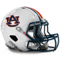
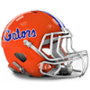
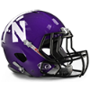
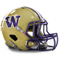

Army
Army Cambridge
Cambridge Heidelberg
Heidelberg Kings College London
Kings College London Maryland
Maryland Navy
Navy Otterbein
Otterbein Penn State
Penn State Rutgers
Rutgers Syracuse
Syracuse Illinois
Illinois Iowa
Iowa Michigan
Michigan Michigan State
Michigan State Minnesota
Minnesota Nebraska
Nebraska Northwestern
Northwestern Notre Dame
Notre Dame Ohio State
Ohio State Wisconsin
Wisconsin California
California Missouri
Missouri Oklahoma
Oklahoma Oregon
Oregon Stanford
Stanford Texas
Texas Texas A&M
Texas A&M UCLA
UCLA USC
USC Washington
Washington Alabama
Alabama Auburn
Auburn Clemson
Clemson Florida
Florida Florida State
Florida State Georgia
Georgia Kentucky
Kentucky LSU
LSU Miami (FL)
Miami (FL) West Virginia
West VirginiaNorth Senior Bowl announced!
The North has announced their Senior Bowl squad for 1982.
QB FILLER - QB, 13/37, 179 yds, 3 TD
QB FILLER - QB, 17/70, 232 yds, 0 TD
QB FILLER - QB, 0/0, 0 yds, 0 TD
RB FILLER - RB, 0 att, 0 yds, 0 TD
RB FILLER - RB, 1 att, 1 yds, 1 TD
RB FILLER - RB, 69 att, 43 yds, 2 TD
FB FILLER - FB, 0 att, 0 yds, 0 TD, 10 rec, 58 yds, 0 TD
G FILLER - G, 6 Pancakes
G FILLER - G, 1 Pancakes
G FILLER - G, 0 Pancakes
T FILLER - T, 0 Pancakes
T FILLER - T, 20 Pancakes
T FILLER - T, 0 Pancakes
C FILLER - C, 2 Pancakes
C FILLER - C, 4 Pancakes
TE FILLER - TE, 2 rec, 9 yds, 1 TD
TE FILLER - TE, 11 rec, 102 yds, 0 TD
WR FILLER - WR, 0 rec, 0 yds, 0 TD
WR FILLER - WR, 1 rec, 5 yds, 0 TD
WR FILLER - WR, 6 rec, 58 yds, 0 TD
WR FILLER - WR, 4 rec, 33 yds, 0 TD
WR FILLER - WR, 2 rec, 13 yds, 0 TD
CB FILLER - CB, 4 Tck, 1 Int
CB FILLER - CB, 9 Tck
CB FILLER - CB, 7 Tck
LB FILLER - LB,
LB FILLER - LB,
LB FILLER - LB,
LB FILLER - LB,
LB FILLER - LB, 3 Tck
LB FILLER - LB,
DT FILLER - DT, 4 Tck
DT FILLER - DT, 25 Tck, 1 FR
DT FILLER - DT, 5 Tck, 2 Sck
DT FILLER - DT, 6 Tck
DE FILLER - DE, 3 Tck, 1 Sck
DE FILLER - DE, 3 Tck
DE FILLER - DE, 4 Tck
FS FILLER - FS, 18 Tck, 1 Sck, 1 Int
FS FILLER - FS, 21 Tck, 1 Int
SS FILLER - SS, 32 Tck, 1 Sck
SS FILLER - SS, 7 Tck
K FILLER - K, 22/35 FG
P FILLER - P, 3743 yards, 38.2 avg, 31 inside 20
South Senior Bowl announced!
The South has announced their Senior Bowl squad for 1982.
QB FILLER - QB, 0/1, 0 yds, 0 TD
QB FILLER - QB, 7/25, 60 yds, 1 TD
QB FILLER - QB, 0/0, 0 yds, 0 TD
RB FILLER - RB, 0 att, 0 yds, 0 TD
RB FILLER - RB, 25 att, 37 yds, 0 TD
RB FILLER - RB, 5 att, 4 yds, 0 TD
FB FILLER - FB, 0 att, 0 yds, 0 TD, 11 rec, 80 yds, 2 TD
G FILLER - G, 21 Pancakes
G FILLER - G, 31 Pancakes
G FILLER - G, 26 Pancakes
T FILLER - T, 0 Pancakes
T FILLER - T, 15 Pancakes
T FILLER - T, 43 Pancakes
C FILLER - C, 0 Pancakes
C FILLER - C, 0 Pancakes
TE FILLER - TE, 17 rec, 125 yds, 1 TD
TE FILLER - TE, 18 rec, 132 yds, 1 TD
WR FILLER - WR, 0 rec, 0 yds, 0 TD
WR FILLER - WR, 16 rec, 152 yds, 2 TD
WR FILLER - WR, 8 rec, 86 yds, 0 TD
WR FILLER - WR, 2 rec, 8 yds, 1 TD
WR FILLER - WR, 7 rec, 51 yds, 0 TD
CB FILLER - CB, 37 Tck, 4 Int
CB FILLER - CB, 32 Tck, 3 Int
CB FILLER - CB, 25 Tck, 3 Int
LB FILLER - LB,
LB FILLER - LB,
LB FILLER - LB, 1 Tck, 1 Int
LB FILLER - LB,
LB FILLER - LB,
LB FILLER - LB,
DT FILLER - DT, 7 Tck
DT FILLER - DT, 8 Tck, 3 Sck
DT FILLER - DT, 7 Tck, 3 Sck
DT FILLER - DT, 4 Tck, 2 Sck
DE FILLER - DE, 25 Tck, 4 Sck
DE FILLER - DE, 20 Tck, 2 Sck
DE FILLER - DE, 6 Tck, 2 FR
FS FILLER - FS,
FS FILLER - FS, 17 Tck, 1 Int, 1 FR
SS FILLER - SS,
SS FILLER - SS, 4 Tck
K FILLER - K, 17/30 FG
P FILLER - P, 3365 yards, 36.2 avg, 40 inside 20
Prestige Updates
Gained Prestige:
+ 1 : California Golden Bears
+ 1 : Minnesota Golden Gophers
+ 2 : Cambridge Blues
+ 2 : LSU Tigers
+ 2 : Maryland Terrapins
+ 5 : Stanford Cardinal
Lost Prestige:
-1 : Clemson Tigers
-1 : Georgia Bulldogs
-1 : Penn State Nittany Lions
-1 : Syracuse Orange
-2 : Army Black Knights
-2 : Auburn Tigers
-2 : Florida Gators
-2 : Iowa Hawkeyes
-2 : Miami (FL) Hurricanes
-2 : Texas Longhorns
-2 : USC Trojans
-3 : Northwestern Wildcats
-3 : Notre Dame Fighting Irish
-3 : Otterbein Cardinals
-4 : Michigan Wolverines
-4 : Missouri Tigers
-4 : Navy Midshipmen
-4 : Washington Huskies
1982 Ray Guy Award Award
 Stanford Cardinal P, P FILLER has won the Ray Guy Award award for 1982.
Stanford Cardinal P, P FILLER has won the Ray Guy Award award for 1982.
1982 Lou Groza Award Award
Stanford Cardinal K, Rafael Septien has won the Lou Groza Award award for 1982.
1982 Jim Thorpe Award Award
Stanford Cardinal CB, Hanford Dixon has won the Jim Thorpe Award award for 1982.
1982 Butkus Award Award
Stanford Cardinal LB, Karl Mecklenburg has won the Butkus Award award for 1982.
1982 Bednarik Award Award
 California Golden Bears DE, Ben Williams has won the Bednarik Award award for 1982.
California Golden Bears DE, Ben Williams has won the Bednarik Award award for 1982.
1982 Outland Trophy Award

Auburn Tigers T, Ken Ruettgers has won the Outland Trophy award for 1982.1982 John Mackey Award Award
 UCLA Bruins TE, Don Hasselbeck has won the John Mackey Award award for 1982.
UCLA Bruins TE, Don Hasselbeck has won the John Mackey Award award for 1982.
1982 Biletnikoff Award Award
 Maryland Terrapins WR, Jerry Rice has won the Biletnikoff Award award for 1982.
Maryland Terrapins WR, Jerry Rice has won the Biletnikoff Award award for 1982.
1982 Johnny Unitas Golden Arm Award Award
 Kings College London Regents QB, QB FILLER has won the Johnny Unitas Golden Arm Award award for 1982.
Kings College London Regents QB, QB FILLER has won the Johnny Unitas Golden Arm Award award for 1982.
1982 Davey O'Brien Award Award
Maryland Terrapins QB, Dan Marino has won the Davey O'Brien Award award for 1982.
1982 Doak Walker Award Award
California Golden Bears RB, Rick Parros has won the Doak Walker Award award for 1982.
1982 Bronko Nagurski Trophy Award
California Golden Bears DE, Ben Williams has won the Bronko Nagurski Trophy award for 1982.
1982 Walter Camp Award Award
Maryland Terrapins WR, Jerry Rice has won the Walter Camp Award award for 1982.
1982 Heisman Trophy Award
Maryland Terrapins WR, Jerry Rice has won the Heisman Trophy award for 1982.
Conference Players of the Year:
----International Conference----
Defense:
Cooper, E. - CB, NAVY (67 Tck, 8 Int, 2 Def TD, 1 FR)
Offense:
Stephone Paige - WR, KCL (48 rec, 687 yds, 6 TD)
----Big Ten Conference----
Defense:
Fox, T. - FS, WIS (61 Tck, 3 Int, 1 Def TD)
Offense:
Gary Clark - WR, IOWA (41 rec, 811 yds, 7 TD)
----Pacific 10 Conference----
Defense:
Irvin, L. - CB, MIZZOU (62 Tck, 4 Int, 1 Def TD, 1 FR)
Offense:
Henry Ellard - WR, MIZZOU (57 rec, 1006 yds, 8 TD)
----Southeastern Conference----
Defense:
Hartenstine, M. - DE, FSU (46 Tck, 8 Sck, 1 FR)
Offense:
Louis Lipps - WR, CLEM (58 rec, 1022 yds, 10 TD)
All-American Team Announced
1982 All-American Team
QB Dan Marino - Maryland Terrapins (215/329, 3377 yds, 41 TD)
RB Rick Parros - California Golden Bears (191 att, 1475 yds, 22 TD)
FB Roger Craig - Texas A&M Aggies (81 att, 566 yds, 9 TD, 19 rec, 191 yds, 1 TD)
TE Don Hasselbeck - UCLA Bruins (55 rec, 512 yds, 5 TD)
WR Jerry Rice - Maryland Terrapins (76 rec, 1952 yds, 28 TD)
C Mike Baab - Kentucky Wildcats (56 Pancakes)
G Guy McIntyre - Michigan State Spartans (58 Pancakes)
T Bubba Paris - Penn State Nittany Lions (77 Pancakes)
DT Mike Pitts - West Virginia Mountaineers (42 Tck, 7 Sck, 1 Def TD, 1 FR)
DE Ben Williams - California Golden Bears (60 Tck, 7 Sck)
LB Karl Mecklenburg - Stanford Cardinal (98 Tck, 7 Sck, 1 Sfty, 2 FR)
CB Hanford Dixon - Stanford Cardinal (69 Tck, 8 Int, 1 Def TD, 4 FR)
SS Gill Byrd - Iowa Hawkeyes (113 Tck, 6 Sck, 1 Blk FG)
FS Rick Sanford - Army Black Knights (77 Tck, 2 Int, 1 Def TD, 2 FR)
K Rafael Septien - Stanford Cardinal (29/34 FG)
P P FILLER - LSU Tigers (3365 yards, 36.2 avg, 40 inside 20)
Southeastern Conference All-Conference Team Announced
1982 Southeastern Conference All-Conference Team.
QB Randall Cunningham - QB - Florida State Seminoles (258/421, 2515 yds, 11 TD)
RB Lionel James - RB - LSU Tigers (349 att, 1400 yds, 13 TD, 24 rec, 154 yds, 1 TD)
FB Michael Haddix - FB - Georgia Bulldogs (39 att, 218 yds, 0 TD)
TE Todd Christensen - TE - West Virginia Mountaineers (44 rec, 530 yds, 4 TD)
WR Louis Lipps - WR - Clemson Tigers (58 rec, 1022 yds, 10 TD)
C Mike Baab - C - Kentucky Wildcats (56 Pancakes)
G Jim Mills - G - Clemson Tigers (52 Pancakes)
T Ken Ruettgers - T - Auburn Tigers (77 Pancakes)
DT Mike Pitts - DT - West Virginia Mountaineers (42 Tck, 7 Sck, 1 Def TD, 1 FR)
DE Eddie Edwards - DE - Clemson Tigers (49 Tck, 12 Sck)
LB Matt Millen - LB - Auburn Tigers (109 Tck, 1 Int, 5 FR)
CB Albert Lewis - CB - Miami (FL) Hurricanes (51 Tck, 6 Int, 1 Def TD, 1 FR)
SS Kirk Springs - SS - Clemson Tigers (84 Tck, 2 Int, 2 FR)
FS Robert Jackson FS - FS - Georgia Bulldogs (31 Tck, 1 Sck, 3 Int, 1 Sfty, 2 FR)
K Gary Anderson K - K - LSU Tigers (26/36 FG)
P P FILLER - P - LSU Tigers (3365 yards, 36.2 avg, 40 inside 20)
Pacific 10 Conference All-Conference Team Announced
1982 Pacific 10 Conference All-Conference Team.
QB John Elway - QB - UCLA Bruins (183/281, 2158 yds, 23 TD)
RB Rick Parros - RB - California Golden Bears (191 att, 1475 yds, 22 TD)
FB Roger Craig - FB - Texas A&M Aggies (81 att, 566 yds, 9 TD, 19 rec, 191 yds, 1 TD)
TE Don Hasselbeck - TE - UCLA Bruins (55 rec, 512 yds, 5 TD)
WR Irving Fryar - WR - UCLA Bruins (74 rec, 912 yds, 9 TD)
C Ray Donaldson - C - California Golden Bears (50 Pancakes)
G Brad Edelman - G - USC Trojans (53 Pancakes)
T Stan Brock - T - Texas A&M Aggies (69 Pancakes)
DT La'Roi Glover - DT - Texas A&M Aggies (35 Tck, 9 Sck, 1 FR)
DE Ben Williams - DE - California Golden Bears (60 Tck, 7 Sck)
LB Karl Mecklenburg - LB - Stanford Cardinal (98 Tck, 7 Sck, 1 Sfty, 2 FR)
CB Hanford Dixon - CB - Stanford Cardinal (69 Tck, 8 Int, 1 Def TD, 4 FR)
SS Lawyer Milloy - SS - Oregon Ducks (128 Tck, 3 Sck, 1 FR)
FS Don Rogers - FS - USC Trojans (54 Tck, 3 Int, 1 Blk FG, 1 FR)
K Rafael Septien - K - Stanford Cardinal (29/34 FG)
P P FILLER - P - Stanford Cardinal (2830 yards, 36.3 avg, 32 inside 20)
Big Ten Conference All-Conference Team Announced
1982 Big Ten Conference All-Conference Team.
QB Bill Kenney - QB - Illinois Fighting Illini (190/365, 2972 yds, 29 TD)
RB Freeman McNeil - RB - Illinois Fighting Illini (340 att, 912 yds, 4 TD, 17 rec, 58 yds, 0 TD)
FB Larry Moriarty - FB - Ohio State Buckeyes (71 att, 361 yds, 8 TD)
TE Pete Metzelaars - TE - Wisconsin Badgers (49 rec, 408 yds, 4 TD)
WR Drew Hill - WR - Notre Dame Fighting Irish (71 rec, 1043 yds, 12 TD)
C Rich Umphrey - C - Notre Dame Fighting Irish (42 Pancakes)
G Guy McIntyre - G - Michigan State Spartans (58 Pancakes)
T Jonathan Ogden - T - Michigan Wolverines (69 Pancakes)
DT John Dutton - DT - Wisconsin Badgers (37 Tck, 12 Sck, 2 FR)
DE Ed Too Tall Jones - DE - Michigan State Spartans (47 Tck, 8 Sck, 1 FR)
LB Otis Wilson - LB - Illinois Fighting Illini (90 Tck, 6 Sck, 1 Int)
CB John Swain - CB - Michigan State Spartans (57 Tck, 6 Int, 1 Def TD, 2 FR)
SS Gill Byrd - SS - Iowa Hawkeyes (113 Tck, 6 Sck, 1 Blk FG)
FS Wes Hopkins - FS - Nebraska Cornhuskers (72 Tck, 3 Int, 1 FR)
K Morten Andersen - K - Wisconsin Badgers (24/28 FG)
P Rich Camarillo - P - Minnesota Golden Gophers (4198 yards, 45.1 avg, 39 inside 20)
International Conference All-Conference Team Announced
1982 International Conference All-Conference Team.
QB Dan Marino - QB - Maryland Terrapins (215/329, 3377 yds, 41 TD)
RB Greg Bell - RB - Rutgers Scarlet Knights (282 att, 1452 yds, 9 TD, 22 rec, 134 yds, 0 TD)
FB Craig James - FB - Army Black Knights (7 att, 5 yds, 3 TD, 6 rec, 106 yds, 0 TD)
TE Ken Whisenhunt - TE - Kings College London Regents (61 rec, 608 yds, 3 TD)
WR Jerry Rice - WR - Maryland Terrapins (76 rec, 1952 yds, 28 TD)
C Kirk Lowdermilk - C - Penn State Nittany Lions (48 Pancakes)
G Jim Sweeney - G - Cambridge Blues (58 Pancakes)
T Bubba Paris - T - Penn State Nittany Lions (77 Pancakes)
DT Joe Klecko - DT - Cambridge Blues (39 Tck, 9 Sck, 1 FR)
DE Dennis Harrison - DE - Army Black Knights (54 Tck, 11 Sck)
LB Clay Matthews - LB - Army Black Knights (120 Tck, 3 Sck, 3 FR)
CB Evan Cooper - CB - Navy Midshipmen (67 Tck, 8 Int, 2 Def TD, 1 FR)
SS Tory James - SS - Maryland Terrapins (75 Tck, 1 Sck, 1 Int)
FS Rick Sanford - FS - Army Black Knights (77 Tck, 2 Int, 1 Def TD, 2 FR)
K Ali Haji-Sheikh - K - Army Black Knights (25/31 FG)
P Rohn Stark - P - Army Black Knights (4226 yards, 46.4 avg, 36 inside 20)
Is Sims really made of glass?
 Reports out of NE suggest that the injuries of Billy Sims - RB is worrying coaches. He has been consulting physios in and out of the building for an extended period, but cannot seem to shake his nagging injuries and get back to form.
Reports out of NE suggest that the injuries of Billy Sims - RB is worrying coaches. He has been consulting physios in and out of the building for an extended period, but cannot seem to shake his nagging injuries and get back to form.
Bowl Games Recruiting Update
3 players committed this week.
5 star players committed this week: 0.
4 star players committed this week: 0.
3 star players committed this week: 3.
2 star players committed this week: 0.
1 star players committed this week: 0.
0 players ranked in the top 100 recruits committed this week.
The most highly touted prospect committing this week was DT FILLER (a 3 star DT from CAPUCHINO HS ranked at #776) who committed to Miami (FL).
Big Ten Conference was the conference that netted the most recruits this week with a total of 1.
Illinois Fighting Illini locked down the most prospects this week was as they got 1 recruits to sign.
The highest ranked uncommitted recruit is Bobby Boucher - LB. He is ranked at #1
Total Recruits committed this season is 753.
Bowl Games Recruiting Update
10 players committed this week.
5 star players committed this week: 1.
4 star players committed this week: 0.
3 star players committed this week: 9.
2 star players committed this week: 0.
1 star players committed this week: 0.
1 players ranked in the top 100 recruits committed this week.
The most highly touted prospect committing this week was Ben Coates (a 5 star TE from BAKER HS ranked at #26) who committed to Texas A&M.
Pacific 10 Conference was the conference that netted the most recruits this week with a total of 4.
Illinois Fighting Illini locked down the most prospects this week was as they got 1 recruits to sign.
The highest ranked uncommitted recruit is Bobby Boucher - LB. He is ranked at #1
Total Recruits committed this season is 750.
Week 14 Recruiting Update
22 players committed this week.
5 star players committed this week: 1.
4 star players committed this week: 0.
3 star players committed this week: 21.
2 star players committed this week: 0.
1 star players committed this week: 0.
1 players ranked in the top 100 recruits committed this week.
The most highly touted prospect committing this week was Merton Hanks (a 5 star CB from ST. CHARLES NORTH HS ranked at #28) who committed to Missouri.
Southeastern Conference was the conference that netted the most recruits this week with a total of 7.
Otterbein Cardinals locked down the most prospects this week was as they got 2 recruits to sign.
The highest ranked uncommitted recruit is Bobby Boucher - LB. He is ranked at #1
Total Recruits committed this season is 740.
Charles Romes - CB (OK) upset with criticism from coaching staff.
Charles Romes - CB (OK) posted on social media about recent criticism from Amos Alonzo Stagg (HC). Romes is not happy with Amos Alonzo Stagg (HC) to put it mildly. Recent criticism from Amos Alonzo Stagg (HC) increased tensions between the two.
International Conference News: Terrapins racking up yards!
The offense of the Terrapins is beating the stew out of everybody this year, posting 5489 total yards and 454 points thus far in 12 games. Quarterback Dan Marino and receiver Jerry Rice have tag-teamed to the tune of 1771 yards this season, while Running Back Tony Nathan - RB has piled up for 999. The big boys up front have crushed the opposition for 254 pancakes this season while giving up only 12 quarterback sacks.
Florida Gators resigns Paul Giel as QB Coach

The Gators have announced that they have given Paul Giel a new contract. Giel will continue to serve as QBCoach for 5 years earning 0.5 million per year.Oklahoma Sooners resigns Joseph Brunner as Head Scout
 The Sooners have announced that they have given Joseph Brunner a new contract. Brunner will continue to serve as HeadScout for 7 years earning 0.5 million per year.
The Sooners have announced that they have given Joseph Brunner a new contract. Brunner will continue to serve as HeadScout for 7 years earning 0.5 million per year.
Northwestern Wildcats resigns Marc Wilson as QB Coach

The Wildcats have announced that they have given Marc Wilson a new contract. Wilson will continue to serve as QBCoach for 6 years earning 0.5 million per year.Minnesota Golden Gophers resigns Dan Marino as QB Coach
 The Golden Gophers have announced that they have given Dan Marino a new contract. Marino will continue to serve as QBCoach for 6 years earning 0.5 million per year.
The Golden Gophers have announced that they have given Dan Marino a new contract. Marino will continue to serve as QBCoach for 6 years earning 0.5 million per year.
Iowa Hawkeyes resigns Urban Meyer as Offensive Coordinator
 The Hawkeyes have announced that they have given Urban Meyer a new contract. Meyer will continue to serve as OffensiveCoordinator for 5 years earning 2.5 million per year.
The Hawkeyes have announced that they have given Urban Meyer a new contract. Meyer will continue to serve as OffensiveCoordinator for 5 years earning 2.5 million per year.
Cambridge Blues resigns Archie Manning as QB Coach
 The Blues have announced that they have given Archie Manning a new contract. Manning will continue to serve as QBCoach for 8 years earning 0.5 million per year.
The Blues have announced that they have given Archie Manning a new contract. Manning will continue to serve as QBCoach for 8 years earning 0.5 million per year.
Penn State Nittany Lions resigns Steve Niehaus as DL Coach
The Nittany Lions have announced that they have given Steve Niehaus a new contract. Niehaus will continue to serve as DLCoach for 7 years earning 0.5 million per year.
Week 14: RB Marcus Allen (ORE) wins Offensive Player of the Week
 Oregon Ducks running back Marcus Allen had a remarkable game, rushing for 144 yards and scoring 0 touchdowns in the Huskies win against Oregon Ducks. His explosive runs helped seal the 23-22 victory, earning him this week's Offensive Player of the Week title.
Oregon Ducks running back Marcus Allen had a remarkable game, rushing for 144 yards and scoring 0 touchdowns in the Huskies win against Oregon Ducks. His explosive runs helped seal the 23-22 victory, earning him this week's Offensive Player of the Week title.
Oregon Ducks prestige bonus + 0.05
Week 14: FS Tim Fox (WIS) wins Defensive Player of the Week
 FS Fox's ball hawking ability was on display in the Badgers 33-14 game with the Minnesota Golden Gophers. He finished with 7 Tck, 2 Int, 1 Def TD.
FS Fox's ball hawking ability was on display in the Badgers 33-14 game with the Minnesota Golden Gophers. He finished with 7 Tck, 2 Int, 1 Def TD.
"Tim has the unique ability to make plays and generate turnovers." -Badgers Defensive Coordinator
Wisconsin Badgers prestige bonus + 0.05
Week 14 : Conference Players of the Week
International Conference Defensive player of the week: CB FILLER - CB, HEI.
International Conference Offensive player of the week: Jerry Rice - WR, MD.
Big Ten Conference Defensive player of the week: Tim Fox - FS, WIS.
Big Ten Conference Offensive player of the week: Gary Clark - WR, IOWA.
Pacific 10 Conference Defensive player of the week: Fred Dean - DE, OK.
Pacific 10 Conference Offensive player of the week: Marcus Allen - RB, ORE.
Southeastern Conference Defensive player of the week: Eddie Edwards - DE, CLEM.
Southeastern Conference Offensive player of the week: Vance Johnson - WR, UK.
Game Recaps for Week 14
Army Black Knights - 30, Navy Midshipmen - 15
Rutgers Scarlet Knights - 37, Syracuse Orange - 20
Heidelberg Student Princes - 26, Otterbein Cardinals - 10
Maryland Terrapins - 41, Penn State Nittany Lions - 7
Cambridge Blues - 15, Kings College London Regents - 7
Michigan State Spartans - 45, Notre Dame Fighting Irish - 10
Iowa Hawkeyes - 21, Nebraska Cornhuskers - 7
Ohio State Buckeyes - 31, Michigan Wolverines - 14
Wisconsin Badgers - 33, Minnesota Golden Gophers - 14
Illinois Fighting Illini - 26, Northwestern Wildcats - 24
Stanford Cardinal - 35, California Golden Bears - 31
Oklahoma Sooners - 21, Missouri Tigers - 10
Texas A&M Aggies - 24, Texas Longhorns - 16
Washington Huskies - 23, Oregon Ducks - 22
USC Trojans - 44, UCLA Bruins - 38
Clemson Tigers - 30, Georgia Bulldogs - 24
Kentucky Wildcats - 32, West Virginia Mountaineers - 13
Auburn Tigers - 32, Alabama Crimson Tide - 21
LSU Tigers - 23, Miami (FL) Hurricanes - 10
Florida Gators - 13, Florida State Seminoles - 7
Week 14: CB Fred Thomas (PSU) has suffered a major injury!
Penn State Nittany Lions's cornerback Fred Thomas sustained a minor injury while attempting to break up a pass. The coaching staff is taking precautions, but he is expected to return to action shortly.
Week 14 Recruiting Update
55 players committed this week.
5 star players committed this week: 4.
4 star players committed this week: 5.
3 star players committed this week: 46.
2 star players committed this week: 0.
1 star players committed this week: 0.
6 players ranked in the top 100 recruits committed this week.
The most highly touted prospect committing this week was Jahri Evans (a 5 star G from MERRYVILLE HS ranked at #2) who committed to Heidelberg.
Pacific 10 Conference was the conference that netted the most recruits this week with a total of 17.
UCLA Bruins locked down the most prospects this week was as they got 4 recruits to sign.
The highest ranked uncommitted recruit is Bobby Boucher - LB. He is ranked at #1
Total Recruits committed this season is 718.
Jahri Evans - G commits to Heidelberg.
 Jahri Evans has committed to the Student Princes.
Jahri Evans has committed to the Student Princes.
Evans is widely considered to be one of the top ten prospects in this years recruiting class, and a lot of eyes have been on the G from MERRYVILLE HS.
Evans was also pursued by Missouri Tigers, Penn State Nittany Lions, USC Trojans, Nebraska Cornhuskers, Navy Midshipmen, Stanford Cardinal, Georgia Bulldogs, Florida Gators, Iowa Hawkeyes, Kings College London Regents, UCLA Bruins, Oklahoma Sooners, Maryland Terrapins, Notre Dame Fighting Irish, Northwestern Wildcats, Clemson Tigers, Army Black Knights, Ohio State Buckeyes, Illinois Fighting Illini, Washington Huskies, Texas Longhorns, Minnesota Golden Gophers, Alabama Crimson Tide, West Virginia Mountaineers, Texas A&M Aggies, Auburn Tigers, Florida State Seminoles, Michigan Wolverines, LSU Tigers, and Wisconsin Badgers.
Clifton, Kyle (FSU) humbled by praise from Ara Parseghian (HC).
Kyle Clifton - LB (FSU) took to social media after being praised by Ara Parseghian (HC). Ara Parseghian (HC) getting along well with Clifton. The player stated he was recently humbled and honored by praise from the coach.
Big Ten Conference News: Nebraska Cornhuskers defense dominates!
The Cornhuskers' defense is beating the brakes off people this season. In 11 games they’ve given up only 2788 total yards and 134 points. Reggie White - DE is the heart of the defense with 77 tackles on the year. Could the Cornhuskers become a defining defense for the league?
Oregon Ducks take home the upset victory!
The Oregon Ducks surprises everyone with an unlikely road win against USC Trojans.
The Trojans never manage to take control of the game, while the Ducks kept grinding and drove the victory home. The Trojans players had expected an easy victory, and this will be a bitter loss and a tough blow to the self-respect of the program. Meanwhile the Ducks fans are ecstatic and are already entertaining thoughts about a cinderella future.
Alabama Crimson Tide resigns Randal Vanhoose as Head Recruiter
 The Crimson Tide have announced that they have given Randal Vanhoose a new contract. Vanhoose will continue to serve as HeadRecruiter for 3 years earning 0.5 million per year.
The Crimson Tide have announced that they have given Randal Vanhoose a new contract. Vanhoose will continue to serve as HeadRecruiter for 3 years earning 0.5 million per year.
Kentucky Wildcats resigns Russell Maryland as DL Coach
 The Wildcats have announced that they have given Russell Maryland a new contract. Maryland will continue to serve as DLCoach for 4 years earning 0.5 million per year.
The Wildcats have announced that they have given Russell Maryland a new contract. Maryland will continue to serve as DLCoach for 4 years earning 0.5 million per year.
Texas Longhorns resigns Francis Schmidt as Special Teams Coach
 The Longhorns have announced that they have given Francis Schmidt a new contract. Schmidt will continue to serve as SpecialTeamsCoach for 5 years earning 0.5 million per year.
The Longhorns have announced that they have given Francis Schmidt a new contract. Schmidt will continue to serve as SpecialTeamsCoach for 5 years earning 0.5 million per year.
Notre Dame Fighting Irish resigns Pop Warner as Head Coach
The Fighting Irish have announced that they have given Pop Warner a new contract. Warner will continue to serve as HeadCoach for 3 years earning 4 million per year.
Army Black Knights resigns Leroy Keyes as RB and Receivers Coach
 The Black Knights have announced that they have given Leroy Keyes a new contract. Keyes will continue to serve as SkillPositionCoach for 4 years earning 0.5 million per year.
The Black Knights have announced that they have given Leroy Keyes a new contract. Keyes will continue to serve as SkillPositionCoach for 4 years earning 0.5 million per year.
Cade report
Out of ME, we have the usual reports about Mossy Cade, the SS. Surely, this in not the kind of story the Regents want to have to deal with. 'We want to focus on football. Having to deal with all the stories coming out about Regents takes away from that', said an anonymous source in the front office.
Kings College London Regents prestige penalty - 0.05
Week 13: RB Tony Nathan (MD) wins Offensive Player of the Week
With a stellar performance, Tony Nathan rushed for 165 yards and scored 2 touchdowns, propelling Maryland Terrapins to triumph over Cambridge Blues.
Maryland Terrapins prestige bonus + 0.05
Week 13: CB Carl Lee (KCL) wins Defensive Player of the Week
In Week 13 of the 1982, Kings College London Regents's Carl Lee made waves with an outstanding defensive display. The defensive back recorded 2 interceptions and 8 tackles, helping propel the Regents to victory against Syracuse Orange. This season, Lee has become a key player with 3 total picks, highlighting his impact since signing in 0.
Kings College London Regents prestige bonus + 0.05
Week 13 : Conference Players of the Week
International Conference Defensive player of the week: Carl Lee - CB, KCL.
International Conference Offensive player of the week: Tony Nathan - RB, MD.
Big Ten Conference Defensive player of the week: Juran Bolden - CB, IOWA.
Big Ten Conference Offensive player of the week: Eric Martin - WR, ILL.
Pacific 10 Conference Defensive player of the week: Doug Martin - DE, WASH.
Pacific 10 Conference Offensive player of the week: Gary Ellerson - RB, MIZZOU.
Southeastern Conference Defensive player of the week: Alan Page - DT, UK.
Southeastern Conference Offensive player of the week: O.J. Simpson - RB, WVU.
Game Recaps for Week 13
Nebraska Cornhuskers - 14, Northwestern Wildcats - 3
Maryland Terrapins - 31, Cambridge Blues - 7
Kentucky Wildcats - 10, Miami (FL) Hurricanes - 3
LSU Tigers - 20, Florida Gators - 10
Washington Huskies - 9, Oklahoma Sooners - 7
Wisconsin Badgers - 33, Iowa Hawkeyes - 7
West Virginia Mountaineers - 35, Florida State Seminoles - 6
UCLA Bruins - 16, Missouri Tigers - 14
Rutgers Scarlet Knights - 23, Heidelberg Student Princes - 7
Illinois Fighting Illini - 49, Minnesota Golden Gophers - 17
Kings College London Regents - 38, Syracuse Orange - 17
Oregon Ducks - 13, USC Trojans - 7
Week 13 Recruiting Update
62 players committed this week.
5 star players committed this week: 5.
4 star players committed this week: 5.
3 star players committed this week: 52.
2 star players committed this week: 0.
1 star players committed this week: 0.
7 players ranked in the top 100 recruits committed this week.
The most highly touted prospect committing this week was Paul Warfield (a 5 star WR from WILLINGBORO HS ranked at #6) who committed to Alabama.
International Conference was the conference that netted the most recruits this week with a total of 17.
Penn State Nittany Lions locked down the most prospects this week was as they got 4 recruits to sign.
The highest ranked uncommitted recruit is Bobby Boucher - LB. He is ranked at #1
Total Recruits committed this season is 663.
Paul Warfield - WR commits to Alabama.
Paul Warfield has committed to the Crimson Tide.
Warfield is widely considered to be one of the top ten prospects in this years recruiting class, and a lot of eyes have been on the WR from WILLINGBORO HS.
Warfield was also pursued by Northwestern Wildcats, USC Trojans, Penn State Nittany Lions, Rutgers Scarlet Knights, Florida Gators, UCLA Bruins, Kings College London Regents, Oklahoma Sooners, Heidelberg Student Princes, Navy Midshipmen, Syracuse Orange, Michigan Wolverines, Miami (FL) Hurricanes, Notre Dame Fighting Irish, Illinois Fighting Illini, Texas Longhorns, Wisconsin Badgers, West Virginia Mountaineers, and Florida State Seminoles.
Criticism of LB Edwards (NW) goes public.
A recent interaction between Donnie Edwards - LB (NW) and Nick Saban (HC) has leaked to the media. Edwards is unhappy with coach criticism.
Prestige Updates
Prestige Changes for week 13
Losses:
California Golden Bears was walked all over by the UCLA Bruins : Prestige loss - 0.05
Southeastern Conference News: Big boys shows the way for the Tigers.
The guys in the offensive trenches from Tigers are smashing opponents this year. They’ve given up only 9 sacks in 11 games while collecting 243 pancakes.
Iowa Hawkeyes Catch the Illinois Fighting Illini by surprise!
The Iowa Hawkeyes fans are celebrating after the Hawkeyes took down the Illinois Fighting Illini.
In a fantastic effort the Hawkeyes brought home the win against a superior opponent. The supporters of the Hawkeyes are taking the victory as evidence that the team is only a couple of seasons away from being a top program, if they can keep progressing and developing their program.
Clemson Tigers Catch the West Virginia Mountaineers by surprise!
 The Clemson Tigers surprises everyone with an unlikely road win against West Virginia Mountaineers.
The Clemson Tigers surprises everyone with an unlikely road win against West Virginia Mountaineers.
The Mountaineers never manage to take control of the game, while the Tigers kept grinding and drove the victory home. The Mountaineers players had expected an easy victory, and this will be a bitter loss and a tough blow to the self-respect of the program. Meanwhile the Tigers fans are ecstatic and are already entertaining thoughts about a cinderella future.
Kentucky Wildcats resigns Tony Rice as QB Coach
The Wildcats have announced that they have given Tony Rice a new contract. Rice will continue to serve as QBCoach for 5 years earning 0.5 million per year.
Texas Longhorns resigns Lloyd Carr as Offensive Coordinator
The Longhorns have announced that they have given Lloyd Carr a new contract. Carr will continue to serve as OffensiveCoordinator for 6 years earning 2.5 million per year.
Oklahoma Sooners resigns Bubba Smith as DL Coach
The Sooners have announced that they have given Bubba Smith a new contract. Smith will continue to serve as DLCoach for 5 years earning 0.5 million per year.
Oregon Ducks resigns Stepfret Williams as RB and Receivers Coach
The Ducks have announced that they have given Stepfret Williams a new contract. Williams will continue to serve as SkillPositionCoach for 3 years earning 0.5 million per year.
Ohio State Buckeyes resigns Tripp Welborne as DB Coach
 The Buckeyes have announced that they have given Tripp Welborne a new contract. Welborne will continue to serve as DBCoach for 4 years earning 0.5 million per year.
The Buckeyes have announced that they have given Tripp Welborne a new contract. Welborne will continue to serve as DBCoach for 4 years earning 0.5 million per year.
Michigan Wolverines resigns Darrel Bevell as QB Coach
 The Wolverines have announced that they have given Darrel Bevell a new contract. Bevell will continue to serve as QBCoach for 3 years earning 0.5 million per year.
The Wolverines have announced that they have given Darrel Bevell a new contract. Bevell will continue to serve as QBCoach for 3 years earning 0.5 million per year.
Cambridge Blues resigns Terry Kinard as DB Coach
The Blues have announced that they have given Terry Kinard a new contract. Kinard will continue to serve as DBCoach for 4 years earning 0.5 million per year.
Week 12: WR Jerry Rice (MD) wins Offensive Player of the Week
Jerry Rice shone brightly in Maryland Terrapins's victory over Heidelberg Student Princes, making 5 catches for 211 yards and 3 touchdowns. His efforts led to a decisive 45-10 win, making him this week's Offensive Player of the Week.
Maryland Terrapins prestige bonus + 0.05
Week 12: LB Zach Thomas (STAN) wins Defensive Player of the Week
In an electrifying performance, Zach Thomas of the Stanford Cardinal showcased his skills during the Cardinal victory over the Missouri Tigers. With 6 tackles and 1 sacks, he proved to be a defensive powerhouse, helping secure the win with a score of 47 to 20.
Stanford Cardinal prestige bonus + 0.05
Week 12 : Conference Players of the Week
International Conference Defensive player of the week: Evan Cooper - CB, NAVY.
International Conference Offensive player of the week: Jerry Rice - WR, MD.
Big Ten Conference Defensive player of the week: Ed Too Tall Jones - DE, MSU.
Big Ten Conference Offensive player of the week: Tony Dorsett - RB, MICH.
Pacific 10 Conference Defensive player of the week: Zach Thomas - LB, STAN.
Pacific 10 Conference Offensive player of the week: Reggie Langhorne - WR, WASH.
Southeastern Conference Defensive player of the week: Mike Hartenstine - DE, FSU.
Southeastern Conference Offensive player of the week: Nathan Poole - RB, AUB.
Game Recaps for Week 12
Otterbein Cardinals - 39, Penn State Nittany Lions - 14
Kings College London Regents - 45, Army Black Knights - 14
Michigan State Spartans - 19, Northwestern Wildcats - 9
Nebraska Cornhuskers - 17, Notre Dame Fighting Irish - 15
Cambridge Blues - 29, Rutgers Scarlet Knights - 17
Auburn Tigers - 33, Miami (FL) Hurricanes - 3
Kentucky Wildcats - 21, Florida Gators - 10
Washington Huskies - 41, Texas Longhorns - 14
Wisconsin Badgers - 38, Michigan Wolverines - 24
Georgia Bulldogs - 27, Florida State Seminoles - 17
UCLA Bruins - 47, California Golden Bears - 10
Clemson Tigers - 17, West Virginia Mountaineers - 13
Stanford Cardinal - 47, Missouri Tigers - 20
Maryland Terrapins - 45, Heidelberg Student Princes - 10
Iowa Hawkeyes - 22, Illinois Fighting Illini - 21
Syracuse Orange - 14, Navy Midshipmen - 10
USC Trojans - 12, Oklahoma Sooners - 7
Week 12 Recruiting Update
108 players committed this week.
5 star players committed this week: 15.
4 star players committed this week: 21.
3 star players committed this week: 72.
2 star players committed this week: 0.
1 star players committed this week: 0.
26 players ranked in the top 100 recruits committed this week.
The most highly touted prospect committing this week was Leon Lett (a 5 star DT from HANNIBAL HS ranked at #4) who committed to Heidelberg.
Pacific 10 Conference was the conference that netted the most recruits this week with a total of 30.
UCLA Bruins locked down the most prospects this week was as they got 7 recruits to sign.
The highest ranked uncommitted recruit is Bobby Boucher - LB. He is ranked at #1
Total Recruits committed this season is 601.
Leon Lett - DT commits to Heidelberg.
Leon Lett has committed to the Student Princes.
Lett is widely considered to be one of the top ten prospects in this years recruiting class, and a lot of eyes have been on the DT from HANNIBAL HS.
Lett was also pursued by Syracuse Orange, Kings College London Regents, Navy Midshipmen, USC Trojans, and Penn State Nittany Lions.
D'Brickashaw Ferguson - T commits to Alabama.
D'Brickashaw Ferguson has committed to the Crimson Tide.
Ferguson is widely considered to be one of the top ten prospects in this years recruiting class, and a lot of eyes have been on the T from WATERLOO HS.
Ferguson was also pursued by Missouri Tigers, Stanford Cardinal, Heidelberg Student Princes, UCLA Bruins, Army Black Knights, Illinois Fighting Illini, and Minnesota Golden Gophers.
Emlen Tunnell - SS commits to Missouri.
 Emlen Tunnell has committed to the Tigers.
Emlen Tunnell has committed to the Tigers.
Tunnell is widely considered to be one of the top ten prospects in this years recruiting class, and a lot of eyes have been on the SS from ETOWAH HS.
Tunnell was also pursued by Heidelberg Student Princes, UCLA Bruins, Kings College London Regents, Alabama Crimson Tide, Syracuse Orange, Army Black Knights, Miami (FL) Hurricanes, Notre Dame Fighting Irish, Minnesota Golden Gophers, Auburn Tigers, Texas A&M Aggies, and Nebraska Cornhuskers.
Milloy, Lawyer (ORE) furious over criticism from Knute Rockne (HC).
Lawyer Milloy - SS (ORE) revealed on social media criticism from Knute Rockne (HC). Milloy was upset with criticism from the coaching staff. 'This is a team sport. They should not be singling out people in this way' Milloy said.
McMichael, Steve (IOWA) is unhappy with coach criticism.
Steve McMichael - DT (IOWA) ranted in a recent interview about his dissatisfaction with criticism from Ace Mumford (HC). McMichael defended his recent performance in no uncertain terms. He was particularly harsh on Head Coach Mumford.
Big Ten Conference News: Nebraska Cornhuskers defense dominates!
The Cornhuskers' defense is giving people the business this season. In 9 games they’ve allowed only 2246 total yards and 116 points. Reggie White - DE is the anchor of the defense with 63 tackles on the year. Could the Cornhuskers become a defining defense for the league?
Auburn Tigers resigns Jim Tressel as Head Coach
The Tigers have announced that they have given Jim Tressel a new contract. Tressel will continue to serve as HeadCoach for 7 years earning 4 million per year.
Florida Gators resigns Randy Gradishar as LB Coach
The Gators have announced that they have given Randy Gradishar a new contract. Gradishar will continue to serve as LBCoach for 6 years earning 0.5 million per year.
Alabama Crimson Tide resigns Aaron Taylor as OL Coach
The Crimson Tide have announced that they have given Aaron Taylor a new contract. Taylor will continue to serve as OLCoach for 5 years earning 0.5 million per year.
Texas Longhorns resigns Dennis Mcgill as Head Trainer
The Longhorns have announced that they have given Dennis Mcgill a new contract. Mcgill will continue to serve as HeadTrainer for 3 years earning 1 million per year.
Oklahoma Sooners resigns Darryll Lewis as DB Coach
The Sooners have announced that they have given Darryll Lewis a new contract. Lewis will continue to serve as DBCoach for 5 years earning 0.5 million per year.
Ohio State Buckeyes resigns Chris Ault as Defensive Coordinator
The Buckeyes have announced that they have given Chris Ault a new contract. Ault will continue to serve as DefensiveCoordinator for 6 years earning 2.5 million per year.
Northwestern Wildcats resigns Mike Vaughan as OL Coach
The Wildcats have announced that they have given Mike Vaughan a new contract. Vaughan will continue to serve as OLCoach for 3 years earning 0.5 million per year.
Michigan State Spartans resigns Billy Neighbors as OL Coach
 The Spartans have announced that they have given Billy Neighbors a new contract. Neighbors will continue to serve as OLCoach for 3 years earning 0.5 million per year.
The Spartans have announced that they have given Billy Neighbors a new contract. Neighbors will continue to serve as OLCoach for 3 years earning 0.5 million per year.
Syracuse Orange resigns Jim Sochor as Defensive Coordinator
 The Orange have announced that they have given Jim Sochor a new contract. Sochor will continue to serve as DefensiveCoordinator for 7 years earning 2.5 million per year.
The Orange have announced that they have given Jim Sochor a new contract. Sochor will continue to serve as DefensiveCoordinator for 7 years earning 2.5 million per year.
Army Black Knights resigns Warren Woodson as Defensive Coordinator
The Black Knights have announced that they have given Warren Woodson a new contract. Woodson will continue to serve as DefensiveCoordinator for 4 years earning 2.5 million per year.
Penn State Nittany Lions resigns Dutch Meyer as Special Teams Coach
The Nittany Lions have announced that they have given Dutch Meyer a new contract. Meyer will continue to serve as SpecialTeamsCoach for 3 years earning 0.5 million per year.
Rutgers Scarlet Knights resigns Mike Singletary as LB Coach
 The Scarlet Knights have announced that they have given Mike Singletary a new contract. Singletary will continue to serve as LBCoach for 3 years earning 0.5 million per year.
The Scarlet Knights have announced that they have given Mike Singletary a new contract. Singletary will continue to serve as LBCoach for 3 years earning 0.5 million per year.
Jones media buzz
Turns out MI local media have jumped on the Ed Too Tall Jones hypetrain. Ed Too Tall Jones - DE is everywhere in the MI media. Dealing with interview requests and evaluating endorsement deals threatens to detract from his play on the field. Seeing how Jones navigates this surging media attention will be an interesting story to follow. As for the team, the Spartans are sure to be enjoying his time in the spotlight, as their PR department is having their jobs done for them.
Michigan State Spartans prestige bonus + 0.05
Week 11: WR Drew Hill (ND) wins Offensive Player of the Week
Drew Hill was unstoppable, notching 3 receiving touchdowns and 196 receiving yards, helping Notre Dame Fighting Irish defeat Ohio State Buckeyes in an exciting match.
Notre Dame Fighting Irish prestige bonus + 0.05
Week 11: CB Evan Cooper (NAVY) wins Defensive Player of the Week
 CB Evan Cooper of the Navy Midshipmen has earned the Defensive Player of the Week award. Cooper finished with 3 Tck, 2 Int, 2 Def TD.
CB Evan Cooper of the Navy Midshipmen has earned the Defensive Player of the Week award. Cooper finished with 3 Tck, 2 Int, 2 Def TD.
Navy Midshipmen prestige bonus + 0.05
Week 11 : Conference Players of the Week
International Conference Defensive player of the week: Evan Cooper - CB, NAVY.
International Conference Offensive player of the week: Art Monk - WR, ARMY.
Big Ten Conference Defensive player of the week: Clarence Chapman - CB, NEB.
Big Ten Conference Offensive player of the week: Drew Hill - WR, ND.
Pacific 10 Conference Defensive player of the week: John Mobley - LB, STAN.
Pacific 10 Conference Offensive player of the week: Irving Fryar - WR, UCLA.
Southeastern Conference Defensive player of the week: Keith Gary - DE, UK.
Southeastern Conference Offensive player of the week: Louis Lipps - WR, CLEM.
Game Recaps for Week 11
California Golden Bears - 40, Oklahoma Sooners - 6
Army Black Knights - 42, Rutgers Scarlet Knights - 35
Michigan State Spartans - 17, Iowa Hawkeyes - 10
Penn State Nittany Lions - 17, Navy Midshipmen - 14
Maryland Terrapins - 24, Kings College London Regents - 21
Kentucky Wildcats - 22, Georgia Bulldogs - 16
Nebraska Cornhuskers - 40, Wisconsin Badgers - 17
Alabama Crimson Tide - 44, Clemson Tigers - 41
Notre Dame Fighting Irish - 30, Ohio State Buckeyes - 26
Minnesota Golden Gophers - 27, Northwestern Wildcats - 3
LSU Tigers - 30, Florida State Seminoles - 27
Stanford Cardinal - 35, Texas A&M Aggies - 7
UCLA Bruins - 42, Oregon Ducks - 24
West Virginia Mountaineers - 31, Miami (FL) Hurricanes - 3
Missouri Tigers - 34, Washington Huskies - 24
Syracuse Orange - 27, Heidelberg Student Princes - 10
Week 11 Recruiting Update
36 players committed this week.
5 star players committed this week: 2.
4 star players committed this week: 16.
3 star players committed this week: 18.
2 star players committed this week: 0.
1 star players committed this week: 0.
8 players ranked in the top 100 recruits committed this week.
The most highly touted prospect committing this week was Mario Williams (a 5 star DE from HAZLETON HS ranked at #3) who committed to Rutgers.
Southeastern Conference was the conference that netted the most recruits this week with a total of 12.
Georgia Bulldogs locked down the most prospects this week was as they got 4 recruits to sign.
The highest ranked uncommitted recruit is Bobby Boucher - LB. He is ranked at #1
Total Recruits committed this season is 493.
Russell Maryland - DT commits to California.
Russell Maryland has committed to the Golden Bears.
Maryland is widely considered to be one of the top ten prospects in this years recruiting class, and a lot of eyes have been on the DT from HOMESTEAD HS.
Maryland was also pursued by Oklahoma Sooners, Rutgers Scarlet Knights, UCLA Bruins, Ohio State Buckeyes, Kentucky Wildcats, Washington Huskies, Texas Longhorns, Heidelberg Student Princes, Otterbein Cardinals, Auburn Tigers, and Illinois Fighting Illini.
Mario Williams - DE commits to Rutgers.
Mario Williams has committed to the Scarlet Knights.
Williams is widely considered to be one of the top ten prospects in this years recruiting class, and a lot of eyes have been on the DE from HAZLETON HS.
Williams was also pursued by Penn State Nittany Lions, Navy Midshipmen, Florida Gators, Oklahoma Sooners, and Auburn Tigers.
Veris, Garin (UCLA) reveals recent praise from Barry Switzer (HC).
Garin Veris - DE (UCLA) revealed on social media recent praise from Barry Switzer (HC). Veris acknowledged the praise from his coach, but clearly stated that he thinks he has more to offer.
Pacific 10 Conference News: Stanford Cardinal defense dominates!
The Cardinal' defense is playing lights out this season. In 9 games they’ve given up only 1869 total yards and 61 points. Karl Mecklenburg - LB is the skipper of the defense with 75 take downs on the year. Could the Cardinal become a defining defense for the league?
Auburn Tigers resigns Derrick Hoover as Head Trainer
The Tigers have announced that they have given Derrick Hoover a new contract. Hoover will continue to serve as HeadTrainer for 5 years earning 0.5 million per year.
Florida Gators resigns Tim Brown as RB and Receivers Coach
The Gators have announced that they have given Tim Brown a new contract. Brown will continue to serve as SkillPositionCoach for 4 years earning 0.5 million per year.
Miami (FL) Hurricanes resigns Gary Patterson as Offensive Coordinator
 The Hurricanes have announced that they have given Gary Patterson a new contract. Patterson will continue to serve as OffensiveCoordinator for 6 years earning 2 million per year.
The Hurricanes have announced that they have given Gary Patterson a new contract. Patterson will continue to serve as OffensiveCoordinator for 6 years earning 2 million per year.
Alabama Crimson Tide resigns Jack Tatum as DB Coach
The Crimson Tide have announced that they have given Jack Tatum a new contract. Tatum will continue to serve as DBCoach for 4 years earning 1 million per year.
Alabama Crimson Tide resigns Merlin Olsen as LB Coach
The Crimson Tide have announced that they have given Merlin Olsen a new contract. Olsen will continue to serve as LBCoach for 3 years earning 0.5 million per year.
Alabama Crimson Tide resigns Tom Brady as QB Coach
The Crimson Tide have announced that they have given Tom Brady a new contract. Brady will continue to serve as QBCoach for 5 years earning 1 million per year.
Alabama Crimson Tide resigns John Baker as Head Trainer
The Crimson Tide have announced that they have given John Baker a new contract. Baker will continue to serve as HeadTrainer for 5 years earning 0.5 million per year.
Clemson Tigers resigns Bennie Owen as Defensive Coordinator
The Tigers have announced that they have given Bennie Owen a new contract. Owen will continue to serve as DefensiveCoordinator for 5 years earning 2.5 million per year.
Texas A&M Aggies resigns Chuck Fusina as QB Coach
 The Aggies have announced that they have given Chuck Fusina a new contract. Fusina will continue to serve as QBCoach for 3 years earning 0.5 million per year.
The Aggies have announced that they have given Chuck Fusina a new contract. Fusina will continue to serve as QBCoach for 3 years earning 0.5 million per year.
Texas Longhorns resigns Elmer Layden as Defensive Coordinator
The Longhorns have announced that they have given Elmer Layden a new contract. Layden will continue to serve as DefensiveCoordinator for 7 years earning 2.5 million per year.
Missouri Tigers resigns Richard Lackey as Head Trainer
The Tigers have announced that they have given Richard Lackey a new contract. Lackey will continue to serve as HeadTrainer for 2 years earning 0.5 million per year.
USC Trojans resigns Chris Zorich as DL Coach
 The Trojans have announced that they have given Chris Zorich a new contract. Zorich will continue to serve as DLCoach for 7 years earning 1 million per year.
The Trojans have announced that they have given Chris Zorich a new contract. Zorich will continue to serve as DLCoach for 7 years earning 1 million per year.
Nebraska Cornhuskers resigns Robert Healey as Head Scout
The Cornhuskers have announced that they have given Robert Healey a new contract. Healey will continue to serve as HeadScout for 7 years earning 0.5 million per year.
Minnesota Golden Gophers resigns Sid Gillman as Offensive Coordinator
The Golden Gophers have announced that they have given Sid Gillman a new contract. Gillman will continue to serve as OffensiveCoordinator for 4 years earning 3 million per year.
Michigan State Spartans resigns Bo Jackson as RB and Receivers Coach
The Spartans have announced that they have given Bo Jackson a new contract. Jackson will continue to serve as SkillPositionCoach for 2 years earning 0.5 million per year.
Cambridge Blues resigns Eric Still as OL Coach
The Blues have announced that they have given Eric Still a new contract. Still will continue to serve as OLCoach for 4 years earning 0.5 million per year.
Maryland Terrapins resigns Frosty Westering as Head Coach
The Terrapins have announced that they have given Frosty Westering a new contract. Westering will continue to serve as HeadCoach for 4 years earning 4 million per year.
Penn State Nittany Lions resigns Pete Carroll as Head Coach
The Nittany Lions have announced that they have given Pete Carroll a new contract. Carroll will continue to serve as HeadCoach for 4 years earning 4.5 million per year.
no. 76 McMichael jerseys sell out.
Fans just love McMichael. The 25 year old DT from Iowa Hawkeyes is among the biggest driver of jersey sales on campus for many years.
Iowa Hawkeyes prestige bonus + 0.05
Week 10: WR Jerry Rice (MD) wins Offensive Player of the Week
In a stellar outing, Jerry Rice of Maryland Terrapins caught 5 passes for 197 yards and 3 touchdowns, contributing significantly to a 47-14 win over Navy Midshipmen. His performance rightfully earned him the Offensive Player of the Week honors.
Maryland Terrapins prestige bonus + 0.05
Week 10: CB Albert Lewis (MIA) wins Defensive Player of the Week
CB Albert Lewis of the Miami (FL) Hurricanes has earned the Defensive Player of the Week award. Lewis finished with 1 Tck, 2 Int, 1 Def TD.
Miami (FL) Hurricanes prestige bonus + 0.05
Week 10 : Conference Players of the Week
International Conference Defensive player of the week: Lee Cole - CB, MD.
International Conference Offensive player of the week: Jerry Rice - WR, MD.
Big Ten Conference Defensive player of the week: John Swain - CB, MSU.
Big Ten Conference Offensive player of the week: Tony Hill - WR, MICH.
Pacific 10 Conference Defensive player of the week: Karl Mecklenburg - LB, STAN.
Pacific 10 Conference Offensive player of the week: Reggie Langhorne - WR, WASH.
Southeastern Conference Defensive player of the week: Albert Lewis - CB, MIA.
Southeastern Conference Offensive player of the week: Steve Young - QB, LSU.
Game Recaps for Week 10
Penn State Nittany Lions - 24, Heidelberg Student Princes - 17
Maryland Terrapins - 47, Navy Midshipmen - 14
Alabama Crimson Tide - 34, Miami (FL) Hurricanes - 21
Wisconsin Badgers - 23, Ohio State Buckeyes - 20
Texas Longhorns - 23, California Golden Bears - 17
Minnesota Golden Gophers - 19, Notre Dame Fighting Irish - 7
LSU Tigers - 27, Clemson Tigers - 14
Washington Huskies - 20, Texas A&M Aggies - 14
Army Black Knights - 55, Otterbein Cardinals - 25
Michigan Wolverines - 32, Michigan State Spartans - 27
Stanford Cardinal - 28, Oregon Ducks - 3
Georgia Bulldogs - 25, Auburn Tigers - 22
Week 10: LB Keith Browner (MSU) has suffered a major injury!
During a crucial game, Michigan State Spartans's linebacker Keith Browner suffered a Broken Wrist. He will follow the team's protocols before returning to play, leaving fans hoping for a swift return.
Recruiting Watch With Darren Francis: Alvin Harper - WR
Howdy football addicts, prepare for the newest installment of Recruiting Watch With Darren Francis. For this edition, we do a report card on Alvin Harper - WR. Harper is a young WR, coming out of TIMBER CREEK HS, FL. Harper is ranked as a 4 star recruit, and 80 overall. Harper is 6' 3" tall, clocks in at 210 pounds and is 19 years old. OK, let us get to it.
This guy understands what it takes to succeed. Respected for his good behavior on the field. Here you have a guy, who really benefits the atmosphere in the building. Everyone wants to be around him. Slippery. That is what he is. Will work well in traffic. Will occasionally turn short gains into big plays.
The following teams are rumored to be interested in Harper: Northwestern Wildcats, Iowa Hawkeyes, Navy Midshipmen, Oklahoma Sooners, Alabama Crimson Tide, Nebraska Cornhuskers, Cambridge Blues, Miami (FL) Hurricanes, Florida Gators, UCLA Bruins, Minnesota Golden Gophers, Florida State Seminoles, West Virginia Mountaineers, Illinois Fighting Illini, Texas Longhorns, Heidelberg Student Princes.
Alvin Harper is surrounded by a wall of silence as to where he might go. No rumours. No indications. It is an enigma.
Week 10 Recruiting Update
46 players committed this week.
5 star players committed this week: 2.
4 star players committed this week: 21.
3 star players committed this week: 23.
2 star players committed this week: 0.
1 star players committed this week: 0.
9 players ranked in the top 100 recruits committed this week.
The most highly touted prospect committing this week was Dave Butz II (a 5 star DT from CHALMETTE HS ranked at #8) who committed to LSU.
International Conference was the conference that netted the most recruits this week with a total of 15.
Heidelberg Student Princes locked down the most prospects this week was as they got 3 recruits to sign.
The highest ranked uncommitted recruit is Bobby Boucher - LB. He is ranked at #1
Total Recruits committed this season is 457.
Dave Butz II - DT commits to LSU.
 Dave Butz II has committed to the Tigers.
Dave Butz II has committed to the Tigers.
Butz II is widely considered to be one of the top ten prospects in this years recruiting class, and a lot of eyes have been on the DT from CHALMETTE HS.
Butz II was also pursued by USC Trojans, Michigan State Spartans, Rutgers Scarlet Knights, Iowa Hawkeyes, Michigan Wolverines, and Ohio State Buckeyes.
Prestige Updates
Prestige Changes for week 10
Losses:
Illinois Fighting Illini were crushed by the Nebraska Cornhuskers : Prestige loss - 0.05
Washington Huskies got trampled by the UCLA Bruins : Prestige loss - 0.05
Big Ten Conference News: Fighting Illini racking up yards!
 The offense of the Fighting Illini is throwing up some serious yardage on everybody this year, posting 3251 total yards and 292 points thus far in 9 games. Quarterback Bill Kenney and receiver Eric Martin have tag-teamed to the tune of 629 yards this season, while Running Back Freeman McNeil - RB has plowed his way for 633. The o-linemen have crushed the opposition for 145 pancakes this season while giving up only 7 quarterback sacks.
The offense of the Fighting Illini is throwing up some serious yardage on everybody this year, posting 3251 total yards and 292 points thus far in 9 games. Quarterback Bill Kenney and receiver Eric Martin have tag-teamed to the tune of 629 yards this season, while Running Back Freeman McNeil - RB has plowed his way for 633. The o-linemen have crushed the opposition for 145 pancakes this season while giving up only 7 quarterback sacks.
Nebraska Cornhuskers pull off the upset!
The Nebraska Cornhuskers fans are celebrating after the Cornhuskers took down the Illinois Fighting Illini.
In a superb effort the Cornhuskers kept at it, and brought home the win. The Fighting Illini are widely considered to be the better of the two programs, but with the Cornhuskers winning the fans are hoping that the Cornhuskers will soon be able to dance with the big boys.
Oklahoma Sooners upset the Texas A&M Aggies!
The Oklahoma Sooners fans are celebrating after the Sooners took down the Texas A&M Aggies.
In a superb effort the Sooners kept at it, and brought home the win. The Aggies are widely considered to be the better of the two programs, but with the Sooners winning the fans are hoping that the Sooners will soon be able to dance with the big boys.
Florida Gators resigns Mack Brown as Offensive Coordinator
The Gators have announced that they have given Mack Brown a new contract. Brown will continue to serve as OffensiveCoordinator for 4 years earning 2.5 million per year.
Miami (FL) Hurricanes resigns Zachary Pitre as Head Scout
The Hurricanes have announced that they have given Zachary Pitre a new contract. Pitre will continue to serve as HeadScout for 4 years earning 0.5 million per year.
Miami (FL) Hurricanes resigns Robert Pickard as Head Trainer
The Hurricanes have announced that they have given Robert Pickard a new contract. Pickard will continue to serve as HeadTrainer for 5 years earning 0.5 million per year.
Alabama Crimson Tide resigns Brent Fullwood as RB and Receivers Coach
The Crimson Tide have announced that they have given Brent Fullwood a new contract. Fullwood will continue to serve as SkillPositionCoach for 3 years earning 0.5 million per year.
Alabama Crimson Tide resigns Hayden Fry as Defensive Coordinator
The Crimson Tide have announced that they have given Hayden Fry a new contract. Fry will continue to serve as DefensiveCoordinator for 5 years earning 2.5 million per year.
Texas A&M Aggies resigns Lawrence Wright as DB Coach
The Aggies have announced that they have given Lawrence Wright a new contract. Wright will continue to serve as DBCoach for 4 years earning 0.5 million per year.
Texas A&M Aggies resigns Clayton Tonnemaker as OL Coach
The Aggies have announced that they have given Clayton Tonnemaker a new contract. Tonnemaker will continue to serve as OLCoach for 6 years earning 0.5 million per year.
Texas A&M Aggies resigns Mike Garrett as RB and Receivers Coach
The Aggies have announced that they have given Mike Garrett a new contract. Garrett will continue to serve as SkillPositionCoach for 5 years earning 0.5 million per year.
Oklahoma Sooners resigns Bennie Johnson as Head Recruiter
The Sooners have announced that they have given Bennie Johnson a new contract. Johnson will continue to serve as HeadRecruiter for 5 years earning 0.5 million per year.
Oklahoma Sooners resigns David Britt as Head Trainer
The Sooners have announced that they have given David Britt a new contract. Britt will continue to serve as HeadTrainer for 3 years earning 1 million per year.
USC Trojans resigns Francis Francis as Head Scout
The Trojans have announced that they have given Francis Francis a new contract. Francis will continue to serve as HeadScout for 4 years earning 0.5 million per year.
USC Trojans resigns Marvin Holly as Head Trainer
The Trojans have announced that they have given Marvin Holly a new contract. Holly will continue to serve as HeadTrainer for 4 years earning 0.5 million per year.
USC Trojans resigns Bud Wilkinson as Head Coach
The Trojans have announced that they have given Bud Wilkinson a new contract. Wilkinson will continue to serve as HeadCoach for 4 years earning 4.5 million per year.
Notre Dame Fighting Irish resigns Ricky Hunley as LB Coach
The Fighting Irish have announced that they have given Ricky Hunley a new contract. Hunley will continue to serve as LBCoach for 4 years earning 0.5 million per year.
Nebraska Cornhuskers resigns Clayton Malcolm as Head Trainer
The Cornhuskers have announced that they have given Clayton Malcolm a new contract. Malcolm will continue to serve as HeadTrainer for 5 years earning 0.5 million per year.
Wisconsin Badgers resigns Randy White as DL Coach
The Badgers have announced that they have given Randy White a new contract. White will continue to serve as DLCoach for 5 years earning 1 million per year.
Minnesota Golden Gophers resigns Glenn Jones as Head Recruiter
The Golden Gophers have announced that they have given Glenn Jones a new contract. Jones will continue to serve as HeadRecruiter for 4 years earning 0.5 million per year.
Illinois Fighting Illini resigns Steve Young as QB Coach
The Fighting Illini have announced that they have given Steve Young a new contract. Young will continue to serve as QBCoach for 4 years earning 0.5 million per year.
Cambridge Blues resigns Ben Schwartzwalder as Offensive Coordinator
The Blues have announced that they have given Ben Schwartzwalder a new contract. Schwartzwalder will continue to serve as OffensiveCoordinator for 4 years earning 2.5 million per year.
Otterbein Cardinals resigns Mike Reid as DL Coach
The Cardinals have announced that they have given Mike Reid a new contract. Reid will continue to serve as DLCoach for 2 years earning 0.5 million per year.
Maryland Terrapins resigns Ed Reed as DB Coach
The Terrapins have announced that they have given Ed Reed a new contract. Reed will continue to serve as DBCoach for 7 years earning 0.5 million per year.
Week 9: WR Renaldo Nehemiah (PSU) wins Offensive Player of the Week
Renaldo Nehemiah had an electrifying game with 3 touchdowns and 189 yards, leading Penn State Nittany Lions past Rutgers Scarlet Knights with a score of 28-26.
Penn State Nittany Lions prestige bonus + 0.05
Week 9: CB Barry Wilburn (FLA) wins Defensive Player of the Week
CB Barry Wilburn of the Florida Gators has earned the Defensive Player of the Week award. Wilburn finished with 1 Tck, 2 Int, 1 Def TD.
Florida Gators prestige bonus + 0.05
Week 9 : Conference Players of the Week
International Conference Defensive player of the week: Frank Warren - DE, SYR.
International Conference Offensive player of the week: Renaldo Nehemiah - WR, PSU.
Big Ten Conference Defensive player of the week: Ed Too Tall Jones - DE, MSU.
Big Ten Conference Offensive player of the week: Daryl Turner - WR, NEB.
Pacific 10 Conference Defensive player of the week: Elvis Patterson - CB, UCLA.
Pacific 10 Conference Offensive player of the week: Rick Parros - RB, CAL.
Southeastern Conference Defensive player of the week: Barry Wilburn - CB, FLA.
Southeastern Conference Offensive player of the week: Mark Boyer - WR, CLEM.
Game Recaps for Week 9
Otterbein Cardinals - 27, Navy Midshipmen - 10
Clemson Tigers - 34, Auburn Tigers - 9
Stanford Cardinal - 30, Texas Longhorns - 6
Oklahoma Sooners - 42, Texas A&M Aggies - 7
Notre Dame Fighting Irish - 21, Michigan Wolverines - 17
Penn State Nittany Lions - 28, Rutgers Scarlet Knights - 26
Kings College London Regents - 20, Heidelberg Student Princes - 16
Ohio State Buckeyes - 6, Iowa Hawkeyes - 3
Wisconsin Badgers - 27, Northwestern Wildcats - 17
Alabama Crimson Tide - 19, Kentucky Wildcats - 10
Nebraska Cornhuskers - 44, Illinois Fighting Illini - 3
California Golden Bears - 38, Oregon Ducks - 16
Army Black Knights - 38, Maryland Terrapins - 35
Michigan State Spartans - 20, Minnesota Golden Gophers - 7
LSU Tigers - 12, Georgia Bulldogs - 7
Miami (FL) Hurricanes - 30, Florida State Seminoles - 7
UCLA Bruins - 48, Washington Huskies - 6
West Virginia Mountaineers - 21, Florida Gators - 10
USC Trojans - 28, Missouri Tigers - 27
Cambridge Blues - 17, Syracuse Orange - 16
Week 9 Recruiting Update
60 players committed this week.
5 star players committed this week: 0.
4 star players committed this week: 33.
3 star players committed this week: 27.
2 star players committed this week: 0.
1 star players committed this week: 0.
11 players ranked in the top 100 recruits committed this week.
The most highly touted prospect committing this week was Greg Jennings (a 4 star WR from CURIE METROPOLITAN HS ranked at #38) who committed to Maryland.
International Conference was the conference that netted the most recruits this week with a total of 19.
Georgia Bulldogs locked down the most prospects this week was as they got 7 recruits to sign.
The highest ranked uncommitted recruit is Bobby Boucher - LB. He is ranked at #1
Total Recruits committed this season is 411.
International Conference News: Top receiver trio?
The Orange trio of Roy Green - WR, Andre Reed - WR and Steve Tasker - WR are currently the leading trio of offensive skill players catching the ball in the league, with 1942 receiving yards between the three.
Auburn Tigers resigns Cas Mylinski as OL Coach
The Tigers have announced that they have given Cas Mylinski a new contract. Mylinski will continue to serve as OLCoach for 4 years earning 0.5 million per year.
Auburn Tigers resigns Barry Davis as Head Recruiter
The Tigers have announced that they have given Barry Davis a new contract. Davis will continue to serve as HeadRecruiter for 5 years earning 0.5 million per year.
Auburn Tigers resigns Don Nehlen as Offensive Coordinator
The Tigers have announced that they have given Don Nehlen a new contract. Nehlen will continue to serve as OffensiveCoordinator for 5 years earning 2.5 million per year.
Florida State Seminoles resigns Russell Carter as DB Coach
 The Seminoles have announced that they have given Russell Carter a new contract. Carter will continue to serve as DBCoach for 4 years earning 0.5 million per year.
The Seminoles have announced that they have given Russell Carter a new contract. Carter will continue to serve as DBCoach for 4 years earning 0.5 million per year.
Florida State Seminoles resigns Steve Kiner as LB Coach
The Seminoles have announced that they have given Steve Kiner a new contract. Kiner will continue to serve as LBCoach for 4 years earning 0.5 million per year.
Florida State Seminoles resigns Tony Dorsett as RB and Receivers Coach
The Seminoles have announced that they have given Tony Dorsett a new contract. Dorsett will continue to serve as SkillPositionCoach for 3 years earning 0.5 million per year.
Florida State Seminoles resigns Charlie Ward as QB Coach
The Seminoles have announced that they have given Charlie Ward a new contract. Ward will continue to serve as QBCoach for 4 years earning 1 million per year.
Florida Gators resigns Pat Dye as Defensive Coordinator
The Gators have announced that they have given Pat Dye a new contract. Dye will continue to serve as DefensiveCoordinator for 3 years earning 3 million per year.
Miami (FL) Hurricanes resigns Dave Brown as DB Coach
The Hurricanes have announced that they have given Dave Brown a new contract. Brown will continue to serve as DBCoach for 5 years earning 0.5 million per year.
Miami (FL) Hurricanes resigns Jim Drombowski as OL Coach
The Hurricanes have announced that they have given Jim Drombowski a new contract. Drombowski will continue to serve as OLCoach for 3 years earning 0.5 million per year.
Miami (FL) Hurricanes resigns Earl Campbell as RB and Receivers Coach
The Hurricanes have announced that they have given Earl Campbell a new contract. Campbell will continue to serve as SkillPositionCoach for 5 years earning 0.5 million per year.
Miami (FL) Hurricanes resigns Robert Neyland as Head Coach
The Hurricanes have announced that they have given Robert Neyland a new contract. Neyland will continue to serve as HeadCoach for 6 years earning 4 million per year.
LSU Tigers resigns Ron Schipper as Offensive Coordinator
The Tigers have announced that they have given Ron Schipper a new contract. Schipper will continue to serve as OffensiveCoordinator for 7 years earning 2.5 million per year.
Missouri Tigers resigns Davey O’Brien as QB Coach
The Tigers have announced that they have given Davey O’Brien a new contract. O’Brien will continue to serve as QBCoach for 3 years earning 0.5 million per year.
Missouri Tigers resigns Steve Spurrier as Head Coach
The Tigers have announced that they have given Steve Spurrier a new contract. Spurrier will continue to serve as HeadCoach for 3 years earning 4 million per year.
Washington Huskies resigns Jackie Sherrill as Defensive Coordinator

The Huskies have announced that they have given Jackie Sherrill a new contract. Sherrill will continue to serve as DefensiveCoordinator for 2 years earning 3 million per year. Kyle Williams has committed to the Bulldogs.
Kyle Williams has committed to the Bulldogs. The Mountaineers have announced that they have given Derrick Brooks a new contract. Brooks will continue to serve as LBCoach for 6 years earning 0.5 million per year.
The Mountaineers have announced that they have given Derrick Brooks a new contract. Brooks will continue to serve as LBCoach for 6 years earning 0.5 million per year.